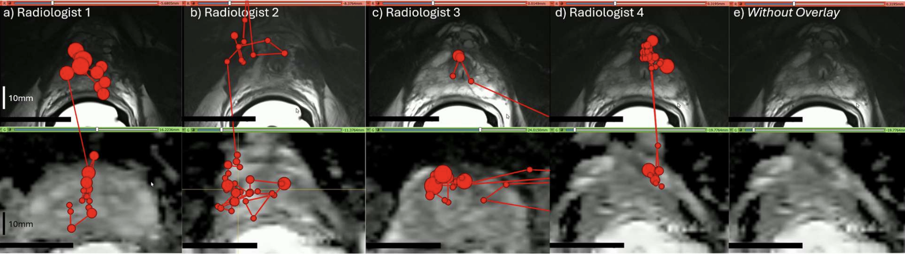
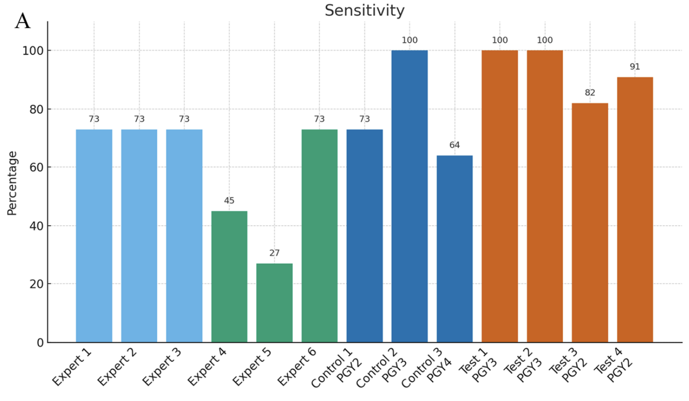

Radiologist Performance & Education

Overview
This work examines how radiologists search medical images, how interpretation varies between readers, and how visual assistance and feedback can support learning. The projects bring together eye tracking during prostate MRI interpretation, visual aids for assessing pancreatic tumour-vessel contact, and remote expert feedback for radiology trainees.
The aim is to understand the interpretation process and evaluate approaches to radiology education using measurable reader performance. This work complements our image analysis and segmentation research, with the focus here on radiologists and the tools they use.
Selected publications
For my full publication record, visit Google Scholar.
- Quantitative metrics to characterize radiologists’ search patterns during multiparametric MRI assessment for prostate cancerScientific Reports, 2026
Developed a three-dimensional eye-tracking platform and quantitative metrics to study how radiologists search multiparametric prostate MRI. In a pilot study involving four radiologists and 40 patients, the metrics identified differences in eye movements, scrolling strategies, and attention across MRI sequences.
Clinical relevance: Provides a framework for studying variation in image interpretation and informing future research on radiology training and visual search strategies. - Testing remote feedback using a virtual semi-automated educational tool for the detection of pancreatic tumour-vessel contact on staging CTCurrent Problems in Diagnostic Radiology, 2026
Evaluated remote expert feedback using a semi-automated tool for annotating pancreatic tumour-vessel contact on staging CT. Residents who received feedback had higher sensitivity on an independent test set than those without feedback (93% versus 79%), with comparable specificity and accuracy relative to surgical pathology. Individual-reader sensitivities are shown in Figure 1.
Clinical relevance: Supports structured remote feedback as an approach to teaching a challenging staging task and making expert input more accessible to trainees. -
A visual aid tool for detection of pancreatic tumour–vessel contact on staging CT: A retrospective cohort studyCan Assoc Radiol J, 2024
Designed a density-based visual aid that improved radiology residents’ sensitivity and balanced accuracy in identifying superior mesenteric artery invasion in patients with pancreatic adenocarcinoma.
Clinical relevance: Suggests a role for visual assistance in teaching and assessing tumour-vessel contact. Broader effects on clinical staging and treatment decisions require further study.

Reader studies and future development
In collaboration with Baines Imaging Research Laboratories (Ward lab), we are developing a multi-reader, multi-case (MRMC) DICOM viewer built with OHIF, Orthanc, and MongoDB. The platform supports radiology reader studies. Our next step is to adapt it for education and evaluation, with potential expansion to more complex trials. AI may be incorporated as part of future development.
Understanding visual search, reader variability, and the effects of feedback can help guide the design of these studies and the assessment of radiology training.